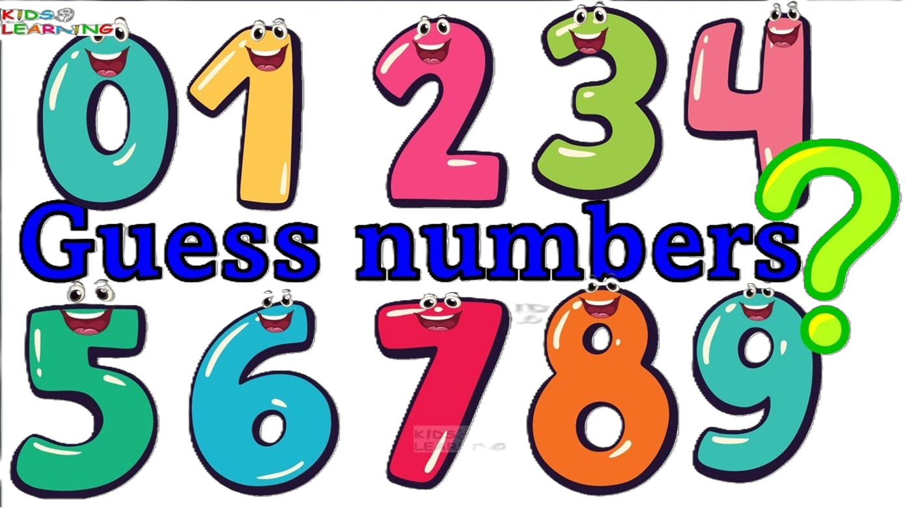

本テーマについて
Webコンテンツ作成の基本を理解し、HTMLやCSSで情報を分かりやすく整理して表現できる力を身につける。また、利用者の立場で見やすく伝わりやすい内容を作れるようになることを目標とする。
プロジェクト課題について
今回のプロジェクトでは、HTMLとJavaScriptを用いてNHKのニュース情報を表示するWebページを作成した。JavaScriptではAxiosライブラリを利用し、指定されたURLからニュースデータを取得した。利用者がチャンネルとジャンルを選択すると、その条件に合ったニュースのタイトルや内容、配信日時を表示できるようにした。実際に外部のデータを取得して画面に表示する仕組みを学ぶことができ、Webアプリケーションの基本的な動作について理解を深めることができた。
プロジェクト課題で作成したページ： project.html

数当てゲーム
この課題では、JavaScriptを使って数当てゲームを作成した。プログラムが1から10までのランダムな数字を生成し、プレイヤーはその数字を予想する。挑戦できる回数は3回までで、予想した数字が正解より大きい場合や小さい場合にはヒントが表示されるようにした。これにより、プレイヤーはヒントを参考にしながら正解を目指すことができる。また、3回以内に正解できなかった場合は、正解の数字と「ゲームオーバー」を表示するようにした。
数当てゲームのページ：数当てゲーム